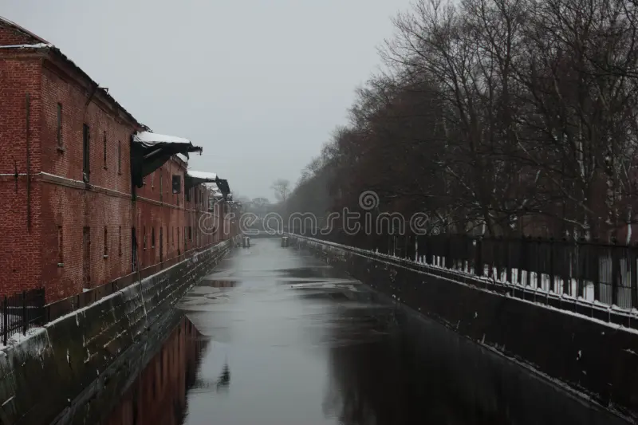

| |
Haunted Places | Paranormal Activities | Exorcisms & Possessions | Social Platforms | Horror Movies | Common Signs | Contact Us |
|---|
Obvodny CanalSaint Petersberg, Russia |
In St. Petersburg, Russia, a pale woman in a white dress stalks the Obvodny Canal. Her whispers will draw you nearer and nearer to the icy, and infinitely ominous, waterway.

Obvodny Canal (Russian: Обводный канал, lit. Bypass Canal) is the longest canal in Saint Petersburg, Russia, which in the 19th century served as the southern limit of the city. It is 8 kilometres (5 mi) long and flows from the Neva River near Alexander Nevsky Lavra to the Yekaterinhofka River not far from the seaport. The canal was dug in 1769–1780 and 1805–1833. By the late 19th century, after the Industrial Revolution, it had effectively become a sewer collecting wastewater from adjacent industrial enterprises. Eventually the canal became shallow and no longer navigable. The banks of the canal are lined with granite.
HISTORY
Construction
The channel was dug in 1769–1780s by an engineer L. K. Carbonnier, its course went from the Yekaterinhofka River to the Ligovsky Canal. Initially the Obvodny Canal had a bulwark on the city side.
On December 23, 1804, the construction of the eastern part was started by Ivan Gerard. The city annually allotted 1 mln 230 thousand roubles for the project. The works continued in 1816–1833, managed by Paul Clapeyron and Pierre-Dominique Bazaine. By 1834 the Obvodny Canal turned into the south city borderline, more than 10 km long and 20 m wide.
The French Basin
In the 1840s the L-shaped channel was constructed to allow vessel unloading and moorage. The new French Basin started from the Obvodny Canal near the Alexander Nevsky Lavra and turned West from Glinyanaya street. To allow moorage the Obvodny Canal significantly widened here. The resulted basin is sometimes marked as the "Obvodny Canal basin". The peninsula between the channel and the French Basin used to have railroads from the end of the 19th up to mid 20th century.
19th century
From the second part of the century the areas around the Obvodny Canal became an industrial district, as a result the channel became an open wastewater sewer. Still it continued to serve as a cheap and convenient throughway for cargo transportation. In the mid 19th century two railroad stations (Varshavsky and Baltiysky) were opened nearby.
Current state
Nowadays the channel is very shallow; navigation is allowed only for small crafts. It is no longer an important waterway, but its embankments turned into major city routes. The channel is crossed by 15 automobile, 6 pedestrian and 1 railroad bridges. Several redevelopment projects have been initiated to bring new life into the former industrial buildings.
Beyond The Veil |
||
|---|---|---|
|
Explore the unexplained and discover mysteries that challenge the ordinary. |
||
|
||
|
|